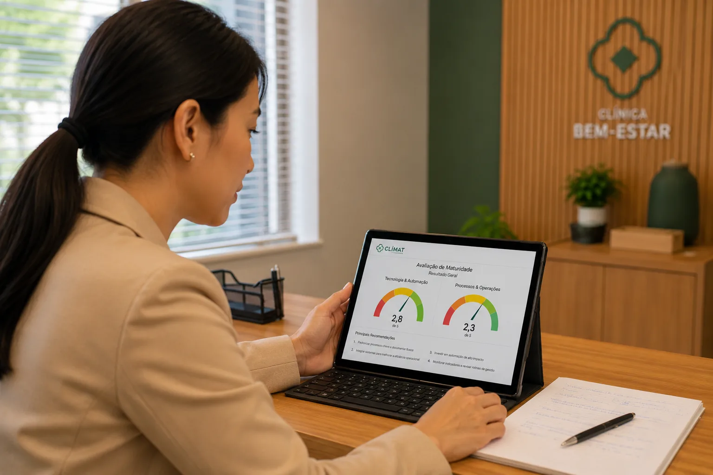

Para clínicas, hospitais e centros de diagnóstico que querem crescer com inteligência operacional, processos sólidos e decisões baseadas em evidências.
Where insights become Healthcare impact
Clínicas, hospitais e centros de diagnóstico que querem crescer com inteligência operacional e dados
Avaliação estruturada do nível de integração tecnológica, processos, indicadores e governança. Baseline para qualquer transformação.
Criação de KPIs clínicos, operacionais e financeiros com dashboards visuais em tempo real integrados à tomada de decisão.
Redesenho de fluxos críticos para maximizar eficiência, reduzir gargalos e aprimorar a experiência do paciente.
Estruturação de funil de atração e retenção de pacientes com métricas claras de CAC, LTV e conversão.
Aplicação de IA generativa, análise preditiva e computação em nuvem para suportar processos clínicos e administrativos.
Implementação de automações para agendamento, pós-consulta, cobrança e relacionamento via WhatsApp e e-mail.
Consultoria especializada em Órteses, Próteses e Materiais Especiais (OPME) e Diretrizes de Utilização (DUT). Suporte técnico para negociações com operadoras, avaliação de tecnologias em saúde e compliance regulatório.
Programas de capacitação para médicos e equipes de saúde em gestão, dados e inovação. Conteúdo prático com metodologia aplicada à realidade dos serviços de saúde brasileiros.
Elaboração de pareceres técnicos, protocolos clínicos e avaliação de tecnologias em saúde para operadoras, hospitais e empresas do setor.
Comece pela avaliação CLIMAT — diagnóstico de maturidade gratuito em 5 minutos — ou conheça nossas jornadas de maturidade.
Nossa abordagem estruturada para transformação de negócios de saúde
A metodologia DAET (Diagnóstico, Arquitetura, Execução e Tração) é nossa abordagem proprietária para conduzir transformações de forma estruturada, mensurável e sustentável em organizações de saúde.
Entendemos dores, metas e operações, criamos baseline de dados e maturidade, e geramos senso de urgência com evidências.
Desenhamos solução integrada (dados + processos + tecnologia) e garantimos viabilidade e clareza de entrega para todas as partes.
Ativamos soluções com suporte, documentação e governança, e garantimos capacitação da equipe para sustentabilidade da mudança.
Medimos impacto, ajustamos estratégia, consolidamos cultura de dados e definimos o próximo ciclo de evolução.

A avaliação proprietária da IHB para medir a maturidade do seu negócio de saúde.
O CLIMAT analisa dois eixos — Tecnologia & Automações e Processos & Operações — e entrega um score de maturidade, o seu perfil e recomendações personalizadas. Leva menos de 5 minutos.
Fazer Avaliação CLIMATConte sua necessidade e a melhor janela para contato — a IHB retorna para você.
E-mail: ihb@ihbstrategies.com
Telefone: (011) 99848-3317